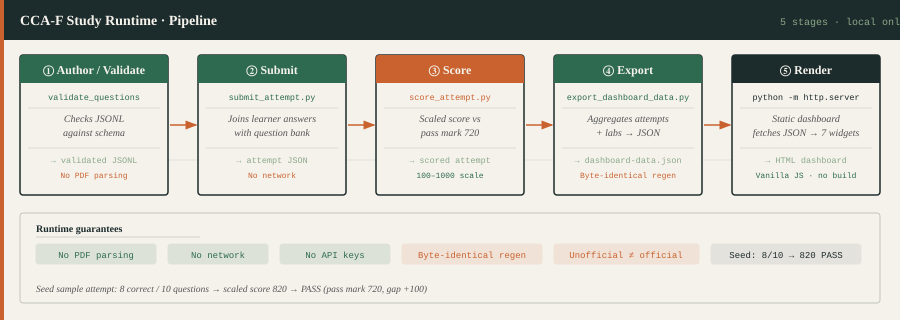
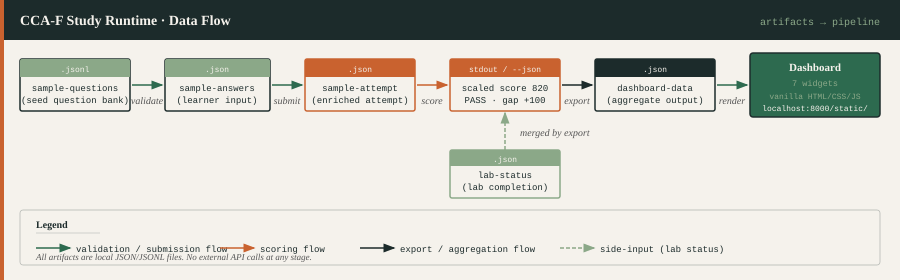
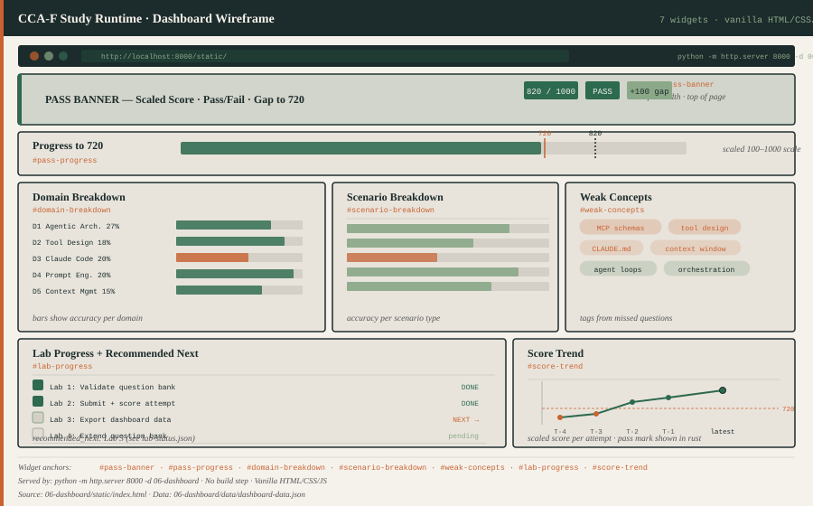
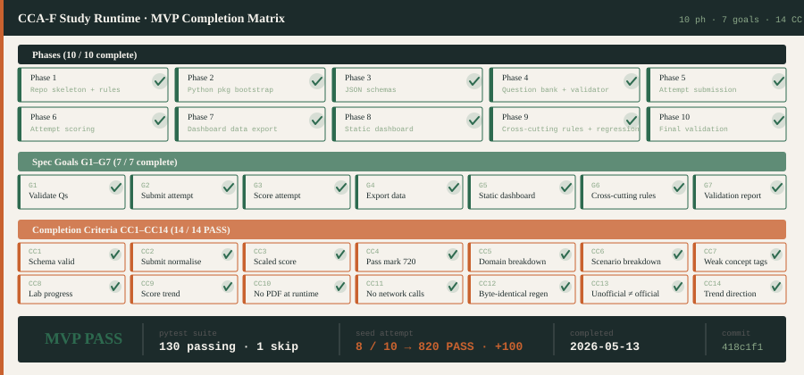

A dependency-light, fully local Python toolkit that validates a question bank, scores mock-exam attempts against the 720 pass mark, and serves a seven-widget static dashboard — with no PDF parsing, no network calls, and no API keys required.
Five sequential stages drive the runtime. Each stage is a single Python command; there is no daemon, no scheduler, and no build step. The pipeline is designed so every stage can be re-run independently.

Install the package in editable mode (pip install -e ".[dev]"), then run the six commands below in order on first setup:
# 1. Validate the seed question bank python -m cca_f_study.validate_questions 02-question-bank/seed/sample-questions.jsonl # 2. Submit a mock-exam attempt python 04-exam-runner/submit_attempt.py \ --questions 02-question-bank/seed/sample-questions.jsonl \ --answers examples/attempts/sample-answers.json \ --out 05-learning-data/attempts/sample-attempt.json # 3. Score the attempt python 04-exam-runner/score_attempt.py 05-learning-data/attempts/sample-attempt.json # 4. Export dashboard data python 04-exam-runner/export_dashboard_data.py \ --attempts 05-learning-data/attempts \ --lab-status 05-learning-data/lab-status.json \ --out 06-dashboard/data/dashboard-data.json \ --now 2026-05-12T00:30:00Z # 5. Serve the static dashboard python -m http.server 8000 -d 06-dashboard # then open http://localhost:8000/static/ # 6. Run the full test suite pytest
All runtime state lives in plain JSON or JSONL files. The diagram below shows how each artifact is produced and consumed. Re-running any command with the same inputs produces byte-identical output.

| Artifact | Produced by | Consumed by |
|---|---|---|
| 02-question-bank/seed/sample-questions.jsonl | hand-authored | validate_questions, submit_attempt |
| examples/attempts/sample-answers.json | learner input | submit_attempt |
| 05-learning-data/attempts/sample-attempt.json | submit_attempt | score_attempt, export_dashboard_data |
| 05-learning-data/lab-status.json | hand-authored | export_dashboard_data |
| 06-dashboard/data/dashboard-data.json | export_dashboard_data | static dashboard (fetch) |
The static dashboard is a single HTML page that fetches dashboard-data.json and renders seven widgets answering the seven most important study questions. No build step, no CDN, no framework — just vanilla HTML, CSS, and JavaScript.

Widget anchors: #pass-banner · #pass-progress · #domain-breakdown · #scenario-breakdown · #weak-concepts · #lab-progress · #score-trend
All ten plan phases, seven spec goals, and fourteen completion criteria are complete. The matrix below shows the full evidence record.

The MVP boundary is intentionally tight. These rules are enforced by regression tests and will not be relaxed without a new spec revision:
status != "official" always